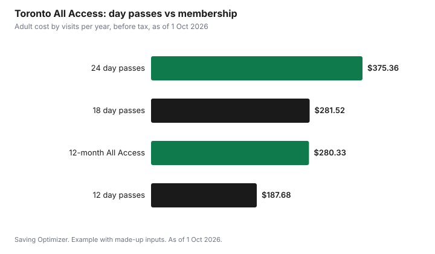

Sports · Canada
City Recreation Passes and Fee Assistance for Adults
City recreation is one of the cheapest ways for adults to stay active, and many cities cut the cost further with free programs and fee subsidies. Toronto is a useful example because it publishes everything. As of 1 October 2026, a FitnessTO All Access adult membership is $280.33 a year before tax, an adult All Access day pass is $15.64, programs at the city's free centres cost nothing, and the Welcome Policy gives eligible lower-income adults 25 and older a $314.60 yearly credit. Adults 60 and older get 50% off adult programs. The cheapest option depends on how often you go.
Key takeaways
- Toronto FitnessTO All Access: adult $49.44 a month, $83.86 for three months or $280.33 a year, before tax.
- Adult All Access day pass: $15.64; a single fitness class: $10.64.
- Toronto free centres: all City-delivered registered and drop-in programs are free.
- Welcome Policy: $314.60 a year for adults 25+ and $683.04 for those up to 24, if family income is below the threshold.
- Older adults 60+: 50% off adult programs.
- Break-even: a yearly All Access membership beats day passes after 18 visits.
Drop-in rates
Toronto sells day passes and multi-visit passes for adults (19 to 59), youth (13 to 18) and older adults (60 and older). An All Access day pass covers the weight room, cardio room, pool and drop-in classes at one location for the day. Plus Swim covers lane swim and the weight or cardio room. Prices below are before tax.
| Pass | Adult | Youth or older adult |
|---|---|---|
| FitnessTO All Access day pass | $15.64 | $7.83 |
| FitnessTO Plus Swim day pass | $4.39 | $2.20 |
| Single fitness or aquatic fitness class | $10.64 | $5.32 |
| 10-visit lane swim | $41.38 | $20.90 |
| 10-visit aquatic fitness | $125.10 | $62.81 |
Passes
Memberships give unlimited access during regular hours at any City-run location. Toronto's page lists three levels, each sold for one, three or twelve months. Youth and older adult prices are about half of adult prices. The city says there are no refunds for memberships or multi-visit passes and charges $14.13 to replace a lost key tag.
| Membership | 1 month | 3 months | 12 months |
|---|---|---|---|
| All Access (gym, pool, drop-in classes) | $49.44 | $83.86 | $280.33 |
| Plus Swim (gym and lane swim) | $39.56 | $67.08 | $224.28 |
| FitnessTO (weight and cardio rooms) | $33.73 | $52.58 | $177.70 |
Break-even is simple. A yearly All Access membership at $280.33 equals about 18 adult All Access day passes at $15.64. Someone who goes twice a month should buy day passes; someone who goes twice a week should buy the membership. For most regular users the three-month All Access at $83.86 is good value, since it equals about five day passes per three months. Compare these with private gyms in budget gyms.
| Membership | Price | Equals this many All Access day passes |
|---|---|---|
| All Access, 1 month | $49.44 | About 3 |
| All Access, 3 months | $83.86 | About 5 |
| All Access, 12 months | $280.33 | About 18 |
Free centres
Toronto runs free centres in neighbourhoods with high levels of low income. The city says all City-delivered registered and drop-in programs at these centres are free for all age groups, and participants do not pay to use cardio rooms, weight rooms, lane swims or drop-in fitness classes there. You still register and check out online. Fees still apply at free centres for residents of other municipalities, sports club memberships and private rentals. The city lists the centres by district on its Free and Lower-Cost Recreation Options page. Many community centres also run free drop-in programs such as leisure swimming and skating; see public skating.
Fee assistance
Toronto's Welcome Policy is a recreation fee subsidy. Approved individuals and families get a credit for 12 months that can be used for registered programs, memberships and multi-use passes. Amounts per year are $683.04 for children and youth up to age 24 and $314.60 for adults and older adults 25 and over, and they cannot be moved between family members. Credits do not carry over; you re-apply each year.
To qualify, the main applicant must be 18 or older and live in Toronto, and total after-tax family income for members 18 and older must be below the Low Income Measure After Tax threshold. People receiving Ontario Works, ODSP or Toronto's child care fee subsidy can apply with their program number instead of income documents. Applications are accepted all year.
| Family size | Income below |
|---|---|
| 1 person | $30,255 |
| 2 people | $42,787 |
| 3 people | $52,403 |
| 4 people | $60,510 |
| 5 people | $67,652 |
Other cities run similar programs under different names. Search your city's website for recreation fee assistance or subsidy before paying full price.
Seniors
Toronto gives older adults aged 60 and older a 50% discount when they register for adult programs, though private, semi-private and small group lessons are not eligible. Older adult membership and pass prices are about half of adult prices, and registration for older adult programs opens at 10 a.m. rather than 7 a.m. on most start dates.
Non-residents and other fees
Toronto charges non-residents a $54.90 surcharge for each registered activity, including otherwise free ones. A surcharge also applies to memberships and multi-visit passes for non-residents, but not to day passes, so a non-resident who goes occasionally may be better off with day passes. Withdrawals and refunds on registered programs carry a $14.13 administration fee, except at free centres and for activities paid with Welcome Policy.
Example with made-up inputs: three adults
These numbers are an example with made-up inputs and a simple rule. They are not real people or bills. Using Toronto's adult prices: one adult goes twice a month, buying 24 day passes a year, $375.36; a yearly All Access membership at $280.33 would be cheaper. A second goes once a month, 12 day passes, $187.68, so day passes win. A third qualifies for the Welcome Policy and uses the $314.60 credit to cover a yearly All Access membership, paying nothing.
| Adult | Visits a year | Best option | Cost |
|---|---|---|---|
| A | 24 | All Access, 12 months | $280.33 |
| B | 12 | Day passes | $187.68 |
| C | Weekly, Welcome Policy | All Access, 12 months with credit | $0 |

Plan
- Estimate visits per month honestly.
- Compare day passes with one-, three- and twelve-month memberships.
- Check whether a free centre is near you.
- Check eligibility for your city's fee subsidy and apply early.
- Use older adult rates and discounts at 60.
- If you live outside the city, compare day passes with surcharged memberships.
Sources
- City of Toronto, Fitness, toronto.ca, as of 1 Oct 2026. FitnessTO membership and day pass prices, conditions of use, free centre access, non-resident surcharge.
- City of Toronto, Free and Lower-Cost Recreation Options, toronto.ca, as of 1 Oct 2026. Free centres, what is free, older adult discount.
- City of Toronto, Welcome Policy recreation fee subsidy, toronto.ca, as of 1 Oct 2026. Amounts per year, eligibility, income thresholds updated 25 Feb 2026.
- City of Toronto, How to Register for Recreation Programs, toronto.ca, as of 1 Oct 2026. Registration times, $14.13 administration fee, $54.90 non-resident surcharge.
- The visit counts and people in the example are an example with made-up inputs; prices are Toronto's published adult prices.
Frequently asked questions
How much is a Toronto recreation membership?
As of 1 Oct 2026, FitnessTO All Access for adults is $49.44 a month, $83.86 for three months or $280.33 a year, before tax. Youth and older adult prices are about half.
What is Toronto's Welcome Policy?
A recreation fee subsidy for Toronto residents with family after-tax income below the LIM-AT threshold. It gives $314.60 a year to adults 25 and older and $683.04 to children and youth up to 24, for registered programs, memberships and passes.
Are any Toronto recreation programs free?
Yes. At Toronto's free centres, all City-delivered registered and drop-in programs are free, including cardio and weight rooms, lane swims and drop-in fitness classes. Many centres also offer free drop-in skating and leisure swimming.
Do seniors get a discount on Toronto recreation?
Yes. Older adults 60 and older get 50% off adult programs, except private, semi-private and small group lessons, and older adult memberships cost about half the adult price.
Do non-residents pay more for Toronto recreation?
Yes. Non-residents pay a $54.90 surcharge per registered activity, and a surcharge on memberships and multi-visit passes, but not on day passes.
Researched and drafted with AI assistance and fact-checked against official Canadian sources. How we create content.
Disclosure: Saving Optimizer has no affiliate relationship with any city or recreation program. Education only.